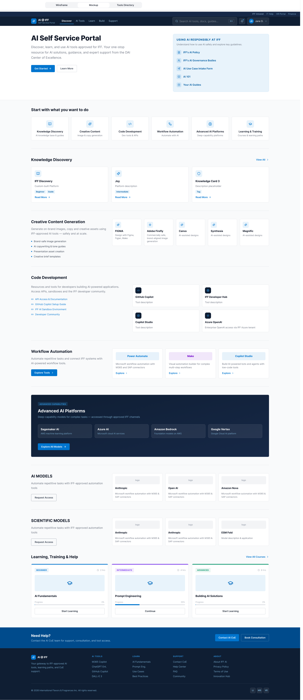

AI Self-Service Portal Redesign
Redesigning International Flavors & Fragrances' internal AI tools portal to help 2,000+ global employees discover and adopt research tools through task-based information architecture.
of employees couldn't find relevant AI tools within 3 minutes
"I don't even know what half these tools do. I click around hoping to find something relevant to my project, but I usually give up and ask a colleague instead."— R&D Scientist, Flavor Division
Key Findings
- Poor Tool Discoverability: 9 out of 12 participants couldn't find relevant tools within 3 minutes. Navigation organized by technical AI categories (NLP, Generative Models) instead of user tasks.
- Misaligned Mental Models: Users think "I need to analyze sensory feedback" but portal showed "Natural Language Processing Tools" — creating cognitive disconnect.
- No Search Functionality: Power users who knew what they wanted had no way to quickly find it. Every session forced navigation through multiple menu levels.
- Missing Contextual Information: Tool cards lacked use case examples, prerequisites, or expected outcomes — users couldn't determine relevance without trial and error.
- Inefficient Onboarding: New users had no guided entry point. All tools shown upfront without progressive disclosure based on role or experience level.
Problems → Solutions
Technical categories that didn't match user workflows
Tools organized by AI model types (NLP, Generative Models) — meaningless to perfumers and scientists who think in terms of research tasks.
Task-based navigation aligned to real work
Reorganized into workflow categories like "Analyze Sensory Data" and "Generate Formula Ideas" — matching how users actually work.
No search = users stuck browsing endless menus
Power users who knew what they wanted wasted 8+ minutes clicking through categories to find familiar tools.
Intelligent search with natural language
Added search bar with autocomplete, tool tags, and cross-references to related capabilities. Reduced time-to-tool to under 30 seconds.
Tool cards lacked context and use cases
Descriptions showed technical specs but not "when to use this" or "what you'll get" — forcing trial-and-error discovery.
Contextual cards with real use cases
Added "Best for..." tags, example scenarios, prerequisites, and expected outputs. Users could assess relevance at a glance.
Research Approach
- 12 user interviews across R&D, flavor, and marketing teams
- 30 survey responses to validate patterns quantitatively
- Card sorting with 15 participants to understand natural tool categorization
- Usability testing of new IA with 8 representative users

Wireframe validated through user testing — task-based navigation reduced time-to-tool from 8 minutes to under 2 minutes
5 Actions Driven by UX Principles
-
Jakob's Law + Information Architecture
Reorganized navigation from technical to task-based categories
Card sorting revealed users naturally grouped tools by workflow tasks ("Find Inspiration," "Analyze Results") not AI model types. Redesigned IA to match users' existing mental models from other research tools they already know.
-
Fitt's Law + Progressive Disclosure
Added prominent search bar with intelligent autocomplete
Reduced interaction cost for frequent actions. Power users can now access tools in 1-2 clicks instead of 5-8. Search learns from usage patterns and surfaces most relevant results first.
-
Recognition over Recall
Designed contextual tool cards with use case examples
Users no longer need to remember what each tool does. Cards display "Best for...", real project examples, and expected outcomes — allowing recognition-based decision making instead of recall.
-
Hick's Law + Personalization
Created role-based dashboards showing relevant tools first
Reduced decision paralysis by showing 5-7 recommended tools based on user's department and recent activity, instead of overwhelming with 40+ tools upfront. Users can always expand to see all.
-
User Control and Freedom
Implemented "Related Tools" recommendations and tool comparison
Users can now discover complementary capabilities and compare similar tools side-by-side. If Tool A doesn't fit, system suggests Tool B or C that might work better — reducing dead ends.